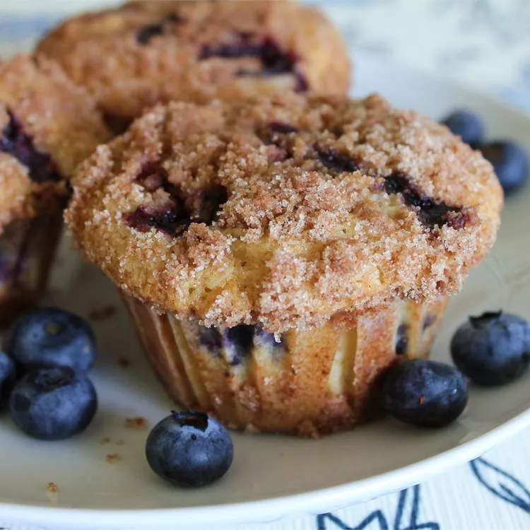

Blueberry Muffins

Delicous Blueberry Muffins
This blueberry muffin recipe is moist, sweet, and bursting with fruity flavor. A buttery streusel topping takes this indulgent breakfast over the top.
Ingredients
For the muffins
- 1 ½ cups all-purpose flour
- ¾ cup white sugar
- 2 teaspoons baking powder
- ½ teaspoon salt
- ⅓ cup vegetable oil
- 1 egg
- ⅓ cup milk, or more as needed
- 1 cup fresh blueberries
Crumb topping
- ½ cup white sugar
- ⅓ cup all-purpose flour
- ¼ cup butter, cubed
- 1 ½ teaspoons ground cinnamon
Directions
- Preheat the oven to 400 degrees F (200 degrees C). Grease 8 muffin cups or line with paper liners.
- For the muffins: Whisk flour, sugar, baking powder, and salt together in a large bowl.
- Pour oil into a small liquid measuring cup. Add egg and enough milk to reach the 1-cup mark; stir until combined. Pour into flour mixture and mix just until batter is combined. Fold in blueberries; set batter aside.
- For the crumb topping: Combine sugar, flour, butter, and cinnamon in a small bowl. Mix with a fork until crumbly.
- Spoon batter into the prepared muffin cups, filling right to the top. Sprinkle with crumb topping.
- Bake in the preheated oven until a toothpick inserted in the center of a muffin comes out clean, 20 to 25 minutes.
Tips
If using a 12-cup muffin pan, you will have 4 empty cups. Add 1 tablespoon of water to the empty cup spaces when baking. Muffins tend to burn faster in a pan with empty cups.
These muffins are best served with homemade butter.